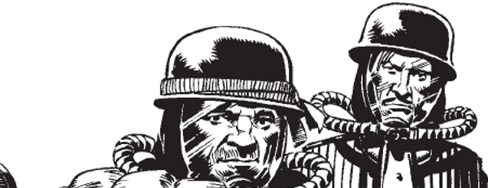

This relatively refined duo (physically reminiscent of Abbott & Costello) are body looters (scavengers) of the Nu Earth battlefields, who get embroiled in the conflict between Rogue Trooper and the Traitor General.
Art by Cam Kennedy
| Story Title | Parts | Pages | w indicates a wraparound coverCovers | Year(s) | Issues | Writer | Artist | Colourist | Letterer |
|---|---|---|---|---|---|---|---|---|---|
From Rogue TrooperThe Body Looters | 1 | 5 | 0 | 1982 | 265 | Gerry Finley-Day | Cam Kennedy | [b&w] | Bill Nuttall |
From Rogue TrooperThe Assassination Run | 2 | 9 | 0 | 1982 | 278-279 | Gerry Finley-Day | Cam Kennedy | [b&w] | Bill Nuttall |
From Rogue TrooperMajor Magnam | 5 | 20 | 0 | 1983 | 311-315 | Gerry Finley-Day | Brett Ewins | [b&w] | Bill Nuttall |
From Rogue TrooperEye of the Traitor | 6 | 32 | 331: Cam Kennedy 1 | 1983 | 327-332 | Gerry Finley-Day | Cam Kennedy | [b&w] | Bill Nuttall |
From Rogue TrooperTo the Ends of Nu Earth | 6 | 26 | 388: Cam Kennedy 392: Brett Ewins 2 | 1984 | 387-392 | Gerry Finley-Day | Cam Kennedy | [b&w] | Tony Jacob |
From HuntedFuries | 10 | 50 | 2035: Richard Elson 1 | 2017 | 2034-2043 | Gordon Rennie | PJ Holden | Len O'Grady | Ellie de Ville |
Linked to Rogue TrooperThe Professionals | 1 | 6 | 0 | 2019 | 2KVS | Karl Stock | Kael Ngu | Barbara Nosenzo | Oz Osborne |
| year | episodes | pages |
| 1980 | 0 | 0 |
| 1981 | 0 | 0 |
| 1982 | 3 | 14 |
| 1983 | 11 | 52 |
| 1984 | 6 | 26 |
| 1985 | 0 | 0 |
| 1986 | 0 | 0 |
| 1987 | 0 | 0 |
| 1988 | 0 | 0 |
| 1989 | 0 | 0 |
| 1990 | 0 | 0 |
| 1991 | 0 | 0 |
| 1992 | 0 | 0 |
| 1993 | 0 | 0 |
| 1994 | 0 | 0 |
| 1995 | 0 | 0 |
| 1996 | 0 | 0 |
| 1997 | 0 | 0 |
| 1998 | 0 | 0 |
| 1999 | 0 | 0 |
| 2000 | 0 | 0 |
| 2001 | 0 | 0 |
| 2002 | 0 | 0 |
| 2003 | 0 | 0 |
| 2004 | 0 | 0 |
| 2005 | 0 | 0 |
| 2006 | 0 | 0 |
| 2007 | 0 | 0 |
| 2008 | 0 | 0 |
| 2009 | 0 | 0 |
| 2010 | 0 | 0 |
| 2011 | 0 | 0 |
| 2012 | 0 | 0 |
| 2013 | 0 | 0 |
| 2014 | 0 | 0 |
| 2015 | 0 | 0 |
| 2016 | 0 | 0 |
| 2017 | 10 | 50 |
| 2018 | 0 | 0 |
| 2019 | 1 | 6 |
| 2020 | 0 | 0 |
| 2021 | 0 | 0 |